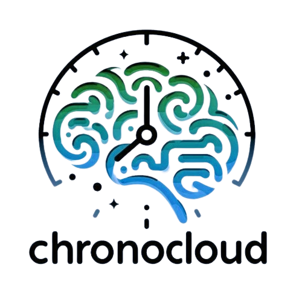

Acerca de ChronoCloud
Copyright © 2024 ChronoCloud
¿Qué es ChronoCloud?
ChronoCloud es un dispositivo instalado en el cuerpo de sus usuarados a través del cual pueden registrar sus recuerdos. A través de esta web los usuarios pueden acceder a sus recuerdos de forma sencilla.
Además, ChronoCloud ofrece la posibilidad de acceder a un amplio archivo de recuerdos de interés histórico y cultural, seleccionados minuciosamente por insticuciones culturales con el fin de exponer al público información fiable e interesante sobre distintos campos de conocimiento.
Funciones
Entre las funciones preferidas por los usuarios de ChronoCloud se encuentran la facilidad que ofrece a la hora de compartir recuerdos con familiares, amigos u otros grupos además de la cantidad de posibilidades que ofrece para consultar y organizar los recuerdos de cada usuario.
Historia
ChronoCloud surgió como una herramienta a través de la cual personas con enfermedades neurodegenerativas o en riesgo de padecerlas pueden recordar momentos vividos y compartirlos con sus seres queridos. Además, gracias al archivo de recuerdos públicos de ChronoCloud, pueden recordar distintas formas de vida del pasado o de distintas épocas.